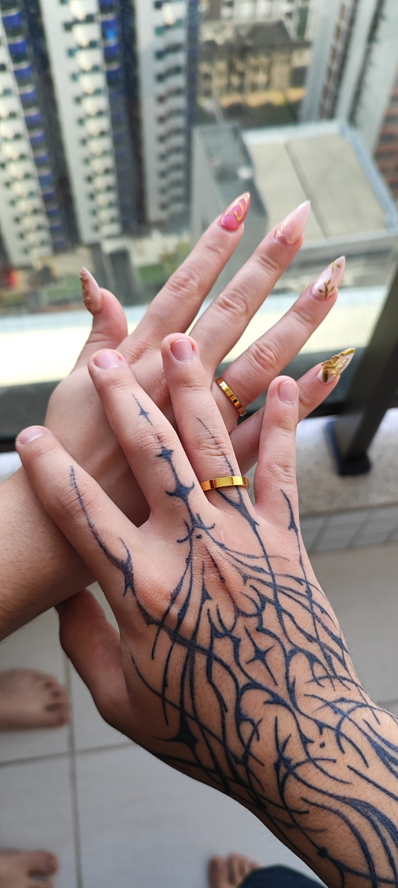
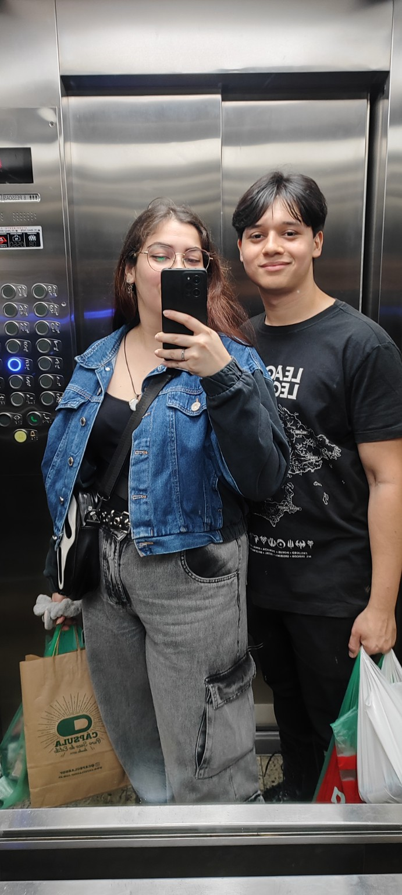
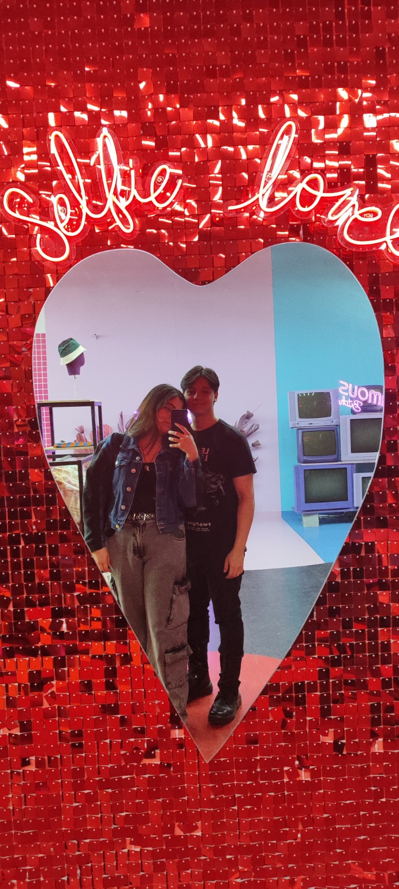
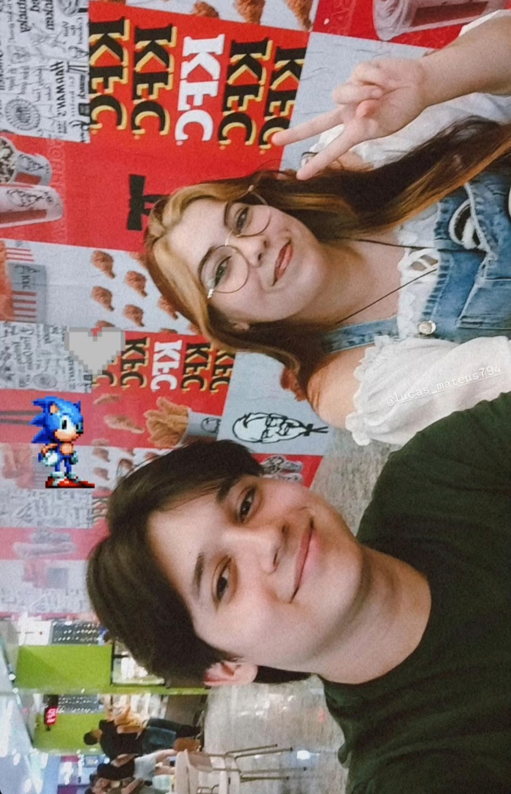

Quatro anos, milhares de momentos
e uma pessoa que eu escolheria
novamente em todos eles.
Tudo começou de uma forma que talvez nenhum de nós imaginasse que mudaria nossas vidas para sempre.
Desde aquele momento, fomos construindo nossa própria história. Vieram conversas, risadas, momentos difíceis, momentos inesquecíveis e milhares de pequenas lembranças que fizeram chegarmos até aqui.
Hoje são 4 anos de uma história que ainda está sendo escrita.
E se eu pudesse voltar para aquele primeiro momento, eu escolheria viver tudo novamente.




Meu amor,
Quatro anos podem parecer apenas um número, mas para mim significam milhares de momentos que tivemos juntos.
Obrigado por cada sorriso, cada conversa, cada abraço e por todos os momentos que fizeram parte da nossa história.
Eu espero que essa seja apenas uma pequena parte de tudo que ainda vamos viver.
Feliz 4 anos para nós. ❤️
Com amor,
Lucas Mateus